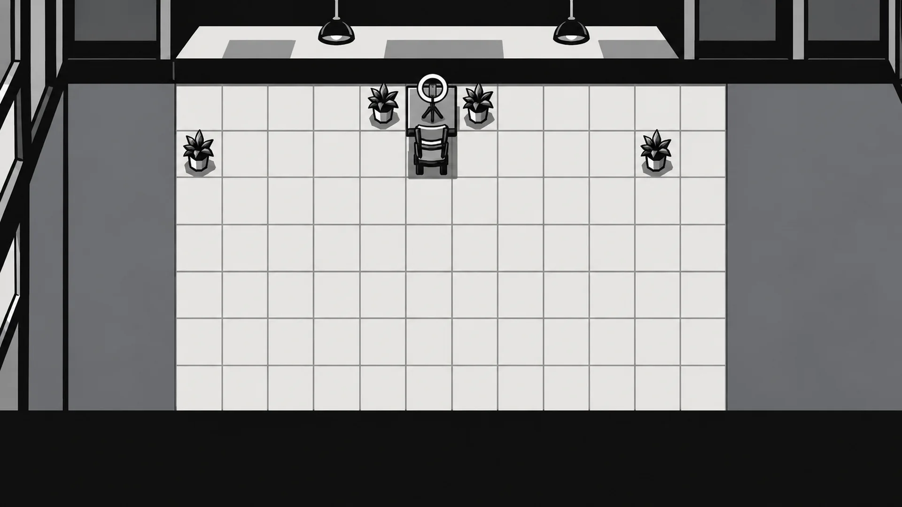
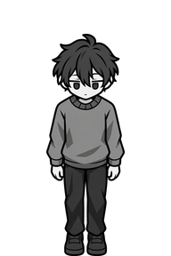
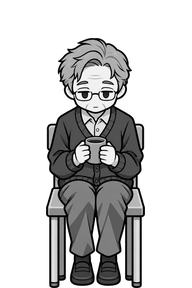
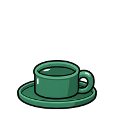

<!doctype html>
<html lang="ko">
<head>
<meta charset="utf-8">
<title>의뢰 안내 그림</title>
<!--
  Codex 의뢰 10에 붙이는 안내 그림 두 장을 만드는 페이지(docs/art-rules.md "의뢰서 양식" 6번). ?part=streamer 또는 ?part=standing.
  streamer: bg-streamer.webp 위에 지울 것(빨강)과 남길 것(파랑)을 덧그린다. standing: 서 있는 손님 크기 라인업이다.
-->
<style>
  body { margin: 0; background: #fff; font-family: system-ui, sans-serif; color: #1b1b1b; }
  .wrap { position: relative; width: 1920px; height: 1080px; }
  .wrap img { position: absolute; inset: 0; width: 1920px; height: 1080px; }
  .mark { position: absolute; box-sizing: border-box; border: 6px solid; font: 700 22px system-ui, sans-serif; }
  .mark span { position: absolute; left: -6px; top: -36px; padding: 2px 8px; color: #fff; white-space: nowrap; }
  .remove { border-color: #d0302a; }
  .remove span { background: #d0302a; }
  .keep { border-color: #2f6db3; }
  .keep span { background: #2f6db3; }
  .note { position: absolute; left: 400px; top: 930px; width: 1120px; font-size: 26px; color: #fff; background: rgba(0, 0, 0, 0.7); padding: 12px 18px; line-height: 1.5; }
  .lineup { padding: 20px; display: flex; gap: 24px; align-items: flex-end; }
  .slot { position: relative; width: 192px; height: 288px; background: #ececec; }
  .slot img { position: absolute; inset: 0; width: 192px; height: 288px; }
  .line { position: absolute; left: 0; right: 0; border-top: 2px dashed; font-size: 11px; }
  .ghost { position: absolute; bottom: 0; left: 46px; width: 100px; border: 2px dashed #555; box-sizing: border-box; background: rgba(120, 120, 120, 0.25);
    padding-top: 70px; text-align: center; font-size: 12px; line-height: 1.5; word-break: keep-all; }
  .name { width: 192px; text-align: center; font-size: 13px; margin-top: 4px; }
</style>
</head>
<body>
<div id="root"></div>
<script>
  const part = new URLSearchParams(location.search).get('part');
  const root = document.getElementById('root');
  // 칸은 그림 좌표 96px이고 판의 왼쪽 위는 bg-grid.js의 streamer 값(372, 178.5), 칸 크기는 (1547 - 372) / 12 x (875 - 178.5) / 7이다.
  const GRID = { left: 372, top: 178.5, w: (1547 - 372) / 12, h: (875 - 178.5) / 7 };
  const cell = (x, y, w = 1, h = 1) => `left:${GRID.left + x * GRID.w}px; top:${GRID.top + y * GRID.h}px; width:${w * GRID.w}px; height:${h * GRID.h}px`;

  if (part === 'streamer') {
    const removes = [[4, 0], [6, 0], [0, 1], [10, 1]];
    root.innerHTML = `<div class="wrap">` +
      removes.map(([x, y]) => `<div class="mark remove" style="${cell(x, y)}"><span>지우기(화분)</span></div>`).join('') +
      `<div class="mark keep" style="${cell(5, 0, 1, 2)}"><span>남기기(촬영자 책상, 링 조명, 의자)</span></div>` +
      `<div class="note">빨간 상자의 화분 네 개만 지우고, 그 자리를 주변과 같은 바닥 타일로 채운다. 파란 상자와 벽, 창, 조명, 타일 줄은 픽셀 하나 움직이지 않는다(격자 값이 bg-streamer와 같아야 한다).</div></div>`;
  }

  if (part === 'standing') {
    const line = (y, color, text) => `<div class="line" style="top:${y}px; border-color:${color}; color:${color}"><span style="position:absolute; right:2px; top:-15px; background:#fff">${text}</span></div>`;
    const lines = line(8, '#3aa35a', '서 있는 키 280px 시작(위 8px)') + line(38, '#2f6db3', '앉은 키 250px 시작(위 38px)');
    const card = (inner, name) => `<div><div class="slot">${inner}${lines}</div><div class="name">${name}</div></div>`;
    root.innerHTML = '<div class="lineup">' +
      card('', '예전 서 있는 손님 guest-down') +
      card('', '확정한 8a 앉은 그림') +
      card('<div class="ghost" style="height:280px">8a 서 있기<br>키 280 ±6<br>폭 80~110<br>발이 캔버스 바닥</div>', '새 guest-8a-stand-down') +
      card('<div class="ghost" style="height:280px">8a 걷기 1<br>왼발 앞</div>', '새 guest-8a-walk1-down') +
      card('<div class="ghost" style="height:280px">8a 걷기 2<br>오른발 앞</div>', '새 guest-8a-walk2-down') +
      card('', '받아 갈 음료(밀 수 있는 초록)') +
      '</div>';
  }
</script>
</body>
</html>
